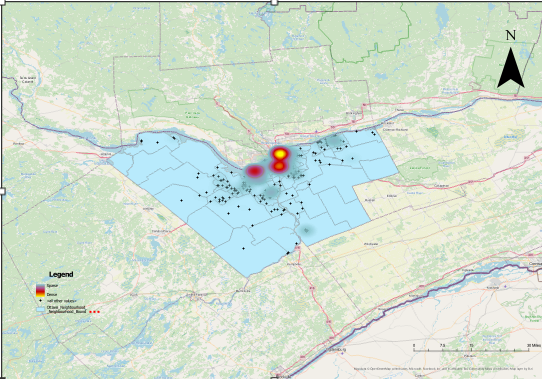
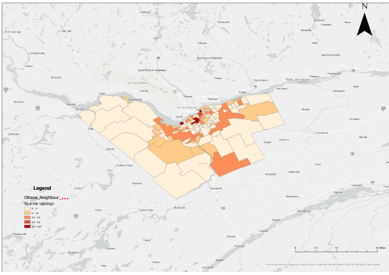

Squirrel Sightings Visualization
Project Description
I processed and visualized squirrel sighting data using ArcGIS Pro to enhance spatial understanding of squirrel distribution across city neighborhoods.
My primary objective was to create two distinct map types: a Heat Map to visualize the intensity and concentration of sightings, and a Choropleth Map to show the number of sightings per neighborhood.
Data Sources
- Squirrel Sighting Data: Collected from iNaturalist, covering April 2023 to April 2025.
- Neighborhood Boundaries: Sourced from the Ottawa Open Data portal.
Key Highlights
-
Data Cleaning & Import:
Imported the squirrel sighting CSV and added it to the Ottawa Neighborhood boundary shapefile. Cleaned data by removing points outside neighborhood boundaries.
-
Heat Map Visualization:
Created a heat map to visualize areas with the highest concentration of squirrel sightings.

-
Spatial Join for Aggregation:
Used ArcGIS Pro’s Spatial Join tool to associate sighting points with neighborhoods and calculate sightings per area.
-
Choropleth Mapping:
Designed a choropleth map to show sightings per neighborhood using graduated colors.

Key Learnings
- Heat Map & Choropleth Techniques: Learned to build both heat maps and choropleths for spatial visualization in ArcGIS Pro.
- Spatial Aggregation: Gained hands-on experience using the Spatial Join tool for summarizing and mapping point data by region.